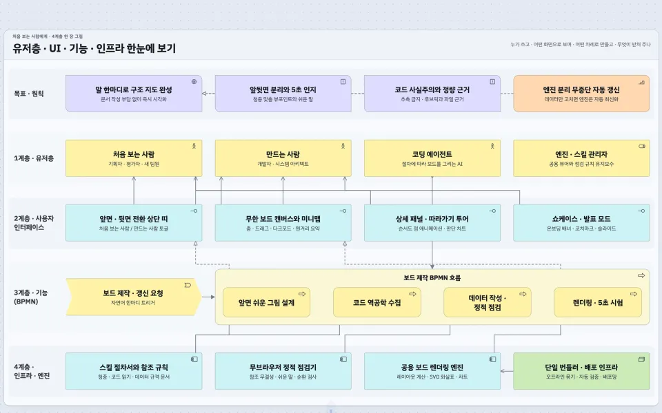

토스 서버 개발자 (5년차)
- 작은 것이라도 운영 경험부터 하고, 거기서 넓혀 간다.
- 시스템 구조 설계, 성능, 중복 · 멱등성 처리.
- 도구를 잘 가져다 쓰되 그 도구를 깊이 이해한다. 여러 컴포넌트를 이해한다.
목표: IT 기획 · 업무 분석 · 설계
방송부 총괄 PD부터 콘텐츠 채널 운영, 개인 시스템 프로젝트까지 — "흥미가 생기면 바로 실행한다"는 성향을 축으로 쌓아온 경험을 IT 기획 · 업무 분석 · 설계라는 목표로 정리한다.
고등학교 방송부에서 시작해 대학 정보보안 전공, 군 복무, 콘텐츠 실험, 현재 진행 중인 시스템 프로젝트까지의 흐름.
동아리 운영 총괄. 학교 행사 방송·무대 연출을 담당하며 전학년 롤 대회를 3회 기획·진행. 조직 운영과 현장 총괄 경험의 출발점.

역할: 진행 PD. 대회 내용 기획, 방송·운영 시스템 설계, 참가자 현장 체크 및 결과 보고까지 단독으로 수행한 첫 "프로젝트". 기획 → 실행 → 마무리 보고의 전체 사이클을 처음 완주했다.
고등학교 활동을 기록으로 남기기 위해 개인 소장용 포트폴리오 제작. 이 시점엔 본인만 볼 수 있는 결과물이었음.
약 2년 8개월간 해군 복무. 대학 입학 직후 입대해 정규 규율 속에서 임무를 완수한 기간 — 기획 · 분석 · 설계와 직접 연결되는 스킬은 아니지만, 장기간 조직 안에서 책임을 완수하는 태도의 근거로 쓸 수 있다. 복무 중 웹 제작을 독학해 포트폴리오를 직접 구현하고, GitHub Pages로 무료 호스팅할 수 있다는 걸 알게 되어 "혼자 보는 결과물"을 "누구나 접근 가능한 홍보 자산"으로 전환했다. 또한 이때 친해진 친구와 훗날 유튜브·인스타그램 운영을 함께 준비했다.
전역 후 겨울방학 동안 취득. 기획 · 분석 · 설계 직무와 직접 연결되진 않지만, 목표를 정하면 꾸준히 완수하는 자기주도 학습 태도의 참고 이력으로 짧게 언급 가능.
군 복무 중 친해진 친구와 미리 준비해두었다가, 전역 후 본격적으로 실행. 게임 실력 있는 친구의 영상을 받아 편집하고, 숏츠 전략을 짜서 두 채널을 운영. 유튜브 구독자 160명 · 누적 조회수 80만회 / 인스타그램 팔로워 200명 · 누적 조회수 220만회. "내 편집·기획 능력이 시장에서 통하는가"를 직접 검증해본 실험.
대전 AI 교육(코디세이) 멘토링에서 시스템 설계에 대한 지도를 받으며 시스템 공부를 시작. 방송·웹·콘텐츠 운영 등 흩어져 있던 경험들이 하나의 서사로 반영되기 어렵다는 문제의식에서, 그 지식들을 통합해 가치를 끌어올리기 위한 my-setup-proj를 개인 역량 강화 프로젝트로 진행 중.
내 몫: "멘토링에서 소프트웨어 공학에 대해서 공부하고 시스템을 기획할려고 할때 어떤 기법으로 공부를 했고 작업을 위해서 시각화된 자료를 만드는 방법을 클로드 스킬로 만들어본 과정이다". 이걸로 "내 시스템을 기획을 시각화해서 정보들을 정리할 수 있다". 지금은 클로드 스킬로 쓸 수 있게 만들어 둔 상태다.

"내 소프트웨어 공학을 배우고 작업하기 위한 공부용이다".

우송대 AI·SW 창업아이디어 경진대회에 나간 팀에서 QA를 맡았다.
멘토링에서 공부하고 질문하고 답했던 과정 · 프로젝트들의 노력과 결과물
어떻게 살고 싶은가, 무엇을 기준으로 판단하는가.
흥미가 생기면 즉시 실행하고, 자신의 프로젝트 안에서 계속 발전하는 삶. 완벽한 계획보다 "일단 만들고 검증한다"는 태도를 유지한다.
Undertale / Deltarune을 혼자 기획·작곡·연출까지 총괄한 1인 인디 디렉터. 시스템(전투·선택지 구조)과 스토리·음악을 한 사람의 손으로 일관되게 엮어낸 방식이, "기획과 실행을 분리하지 않는" 이재엽의 성향과 맞닿아 있다.
적성, 강점과 약점, 일할 때 중요하게 여기는 기준.
흥미 & 기획
목표: IT 기획 · 업무 분석 · 설계. 게임 · 교육 · 데이터는 도메인이고, PM은 경력이 쌓인 뒤 맡는 역할이다. 첫 자리는 개발자로 취업한다 — 멘토링에서 들은 말처럼 "취업을 할 때는 PM을 뽑지는 않아". 기획은 경력이 쌓여 팀장을 맡을 때 한다. 그때를 위해 개발하면서 사람들의 요구를 분석하고 설계하는 법을 배운다. 이 직무를 4가지 축으로 분해했다.
사람들의 요구를 분석하고, 요구 → 명세 → 설계(UML · ERD · BPMN)로 정리하는 일. 게임은 도메인 예시 하나 — 규칙 · 수치를 설계하는 시스템 기획도 같은 일이다.
가장 기본은 데이터를 다루는 지식. 내 손으로 짓고, AI가 만든 것도 왜 그렇게 했는지 설명할 수 있어야 한다. 데이터는 한 곳에 · 중복 없이 · 최신으로 둔다.
2027 목표 넷 — 분기마다 매듭 하나(누르면 보이는 주소로) · 내 손으로 짓고 설계 한 벌 그리기 · 빅데이터 준전문가(ADsP) · 기록을 내 지식으로. 공공 RFP 하나로 제안 요지 2쪽도 연습한다.
회사는 직무를 뽑는다. 이력서는 내 자리가 될 단 한 곳에 닿으면 되니, 목표가 한 줄이어야 겨눌 수 있다. 가고 싶은 회사 셋의 "따낸 사업 · 하는 일"은 아직 정리 전.
각 경험이 "IT 기획 · 업무 분석 · 설계" 쪽 지원 시 어떤 역량을 증명하는 근거가 되는지 정리했다. 자기소개서·포트폴리오의 뼈대로 그대로 쓸 수 있다.
| 경험 | 증명되는 역량 | 기획자 관점 재해석 |
|---|---|---|
| 경상롤드컵 (진행 PD)3회 기획·운영, 중학생 대상 | 기획 총괄현장 운영보고 체계 | 대회 룰·진행 시스템을 설계하고 사람이 실제로 그 룰대로 움직이게 만든 경험 — 게임 시스템 기획의 축소판. |
| 웹 포트폴리오 제작gamercross.github.io | 구현력셀프 브랜딩 | 기획을 문서로만 두지 않고 직접 웹으로 구현·배포까지 완결한 경험. |
| 유튜브·인스타그램 운영구독 160 / 팔로워 200, 누적 조회 300만 | 데이터 기반 전략가설 검증 | "숏츠 전략"을 세우고 조회수·구독자 데이터로 결과를 검증 — 시스템 기획의 밸런스 조정·지표 기반 개선과 동일한 사이클. |
| my-setup-proj진행 중 | 시스템 설계 학습지식 통합 | 개인이 배운 지식·프로젝트 경험을 하나의 구조로 통합하는 과정 자체가 "시스템을 설계하는 연습". |
글쓰기 템플릿
현재 별도 정보 탐색 경로가 없다고 했으니, 바로 시작할 수 있는 채널을 구체적으로 지정했다.
archi-board와 온톨로지 시스템은 둘 다 "시스템"으로 본다. 온톨로지는 "데이터의 정보를 사람이 이해하는 내용을 담는것", archi-board는 "사용자가 사용하는 시스템을 기획하는 것"이다.
사용자가 쓰는 시스템을 기획한다.
데이터의 정보를 사람이 이해하는 내용을 담는다.
학술제에 낸다.
2027에 정한 것.
2026년 11월 현직자 특강에서 현직 개발자 넷에게 들은 말이다. 말마다 그 말이 받쳐 주는 이 로드맵의 줄을 이었다.
2학년 하반기부터 바로 실행할 수 있는 항목.
오늘 뭘 했고 왜 했는지만 짧게 남겨도 충분합니다. 기록은 이 브라우저에만 저장됩니다.
이 기록은 지금 이 기기·브라우저에만 저장됩니다 (다른 기기에서는 보이지 않음). 공유용 기록이 필요하면 Claude 아티팩트 버전을 이용하세요.
Career Roadmap — 이재엽 · 우송대학교 IT융합학부 컴퓨터 정보보안전공 2학년 · Updated 2026